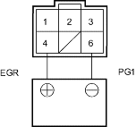
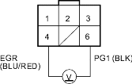

DTC P0401: EGR Insufficient Flow
- Reset the ECM/PCM (see page 11-4).
- Test-drive under the following conditions.
- Without any electrical load.
- Decelerate from 88 km/h (55 mph) for at least 5 seconds.
- Check the Temporary DTC with scan tool.
Is Temporary DTC P0401 indicated?
YES |
- Clean the intake manifold EGR port with carburettor cleaner. Clean the passage inside the EGR valve with carburettor cleaner or replace the EGR valve. |
NO |
- Intermittent failure, go to step 4. |
- Turn the ignition switch OFF.
- Disconnect the EGR valve 6P connector.
- Connect the battery positive terminal to EGR valve connector terminal No. 4.

Terminal side of male terminals
- Start the engine and let it idle, then connect the battery negative to terminal No. 6.
Did the engine stall or run rough?
YES |
- Intermittent failure, system is OK at this time. |
NO |
- Clean the intake manifold EGR port with carburettor cleaner. Clean the passage inside the EGR valve with carburettor cleaner or replace the EGR valve. |

DTC P1491: EGR Valve Insufficient Lift
- Reset the ECM/PCM (see page 11-4).
- Start the engine. Hold the engine at 3,000 rpm (min-1) with no load (in Park or neutral) until the radiator fan comes on.
- Drive the vehicle under load for about 10 minutes. Try to keep the engine speed in the 1,700-2,500 rpm (min-1) range.
- Check the Temporary DTC with the scan tool.
Is Temporary DTC P1491 indicated?
YES |
- Go to step 5. |
NO |
- Intermittent failure, system is OK at this time. Check for poor connections or loose wires at the EGR valve and at the ECM/PCM. |
- Turn the ignition switch OFF.
- Disconnect the EGR valve 6P connector.
- Start the engine and let it idle.
- Measure voltage between the EGR valve 6P connector terminals No. 4 and No. 6.

Is there battery voltage?
YES |
- Substitute a known-good ECM/PCM and recheck (see page 11-6). If symptom/indication goes away, replace the original ECM/PCM. |
NO |
- Go to step 9. |